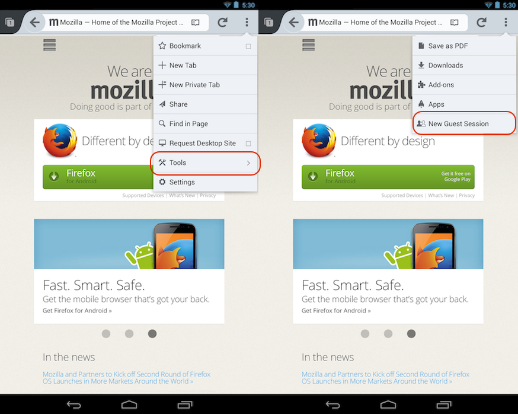

【美商謀智訊息】Mozilla 是全球性的非營利組織，以推動網路的平等、自由、開放為宗旨，旗下的 Firefox 瀏覽器、Firefox for Android 行動瀏覽器、Firefox OS 開放行動作業系統廣受全球市場喜愛。美西時間 10 月 29 日正式釋出行動版瀏覽器 Firefox for Android。新版本提供全新的「訪客瀏覽 (Guest Browsing)」功能，讓使用者能和親友共享行動裝置上的 Firefox，卻又不需擔心他人看到自己的隱私資訊，如書籤、密碼、表單資料、瀏覽記錄、已開啟的網頁等。
新功能「訪客瀏覽」將迅速鎖存你的個人資料，並為臨時使用者提供全新的瀏覽作業。一旦啟動訪客瀏覽功能，Firefox 將會重新開啟全新的瀏覽視窗；而只要關閉瀏覽視窗，也會跟著刪除該使用者的資訊。也就是說，使用者隨時都可把自己的智慧型手機或平板電腦，借給親朋好友瀏覽網站，同時也能確保個人隱私資料的安全。
若要啟動訪客瀏覽功能，只要進入 Firefox 的選單找到「工具」，點選「進入訪客瀏覽階段 (New Guest Session)」即可。同樣的，只要進入選單並點選「結束訪客瀏覽階段 (Exit Guest Session)」，就能關閉訪客瀏覽功能。

Firefox for Android 亦可讓你用自己最愛的相片而輕鬆自訂 Android 裝置。從現正瀏覽的網頁中，使用者可將任何圖片直接設為桌布，或指定為任一聯絡人的大頭照。只要長按自己喜歡的圖片就會出現右鍵選單，此時再點選「將圖片設為 (Set Image As)」，即可將 Web 圖片設定到自己的裝置中。
Firefox for Android 新版新增支援烏克蘭文、愛爾蘭文、羅馬尼亞文，現已支援 27 種語言。
若需更多相關資訊：
- Firefox for Android 版本說明
- Windows、Mac、Linux 版 Firefox 的版本說明
- 下載 Firefox for Android
- 下載 Windows、Mac、Linux 版 Firefox
- Firefox 新聞中心